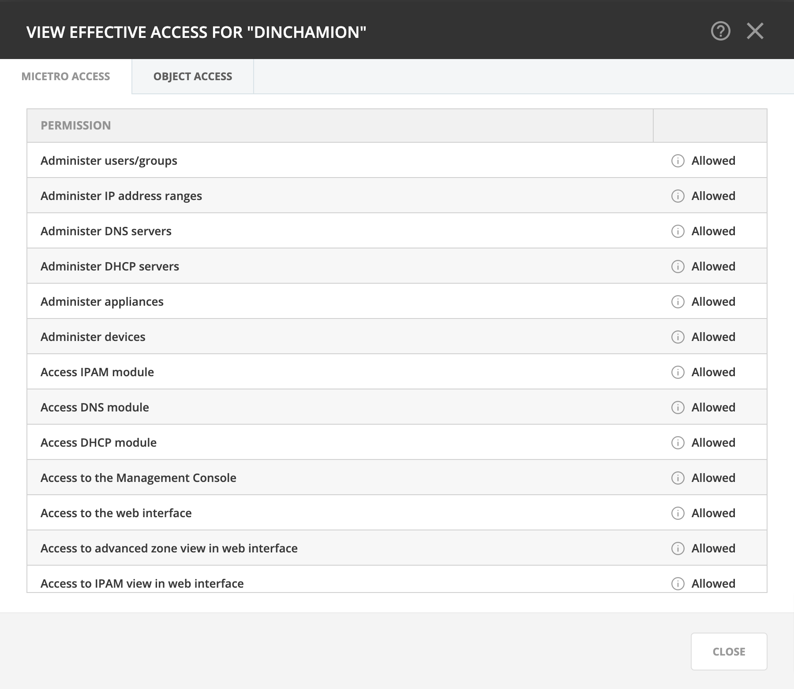
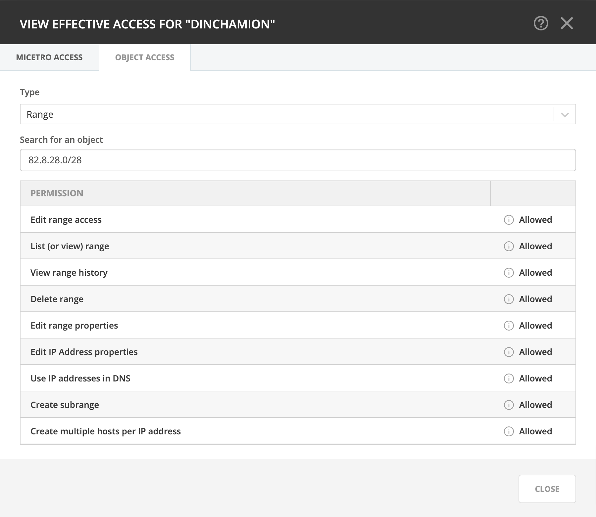

Effective access
The Effective access dialog is useful for checking access for a user/group, and to troubleshoot access control problems.
Administrator with access to managing users/groups in Micetro can check the effective access of a user or group based on the role(s) the user/group is assigned to.
Navigate to in the web application.
Select Users or Groups, depending on whose access you want to check.
Select the user/group in the grid, and use the Effective access action from the top bar or the ellipsis menu.
- Micetro access
It shows all enabled permissions for the user/group.
- Object access
Here you can select an object type and search for a specific object to check the access the selected user/group has, as well as where the access comes from.

{kind=link}
{kind=link}
Note
The Effective access dialog will display detailed warnings if permissions to the selected object are set, but a parent permission is not.
Example: examining effective access on a DNS zone might reveal that the user is attached to a role that has permission to view DNS zones, but no permission to use the DNS module.
Tip
By hovering over the i icon in the permissions list, the role(s) where the permission was set is displayed.